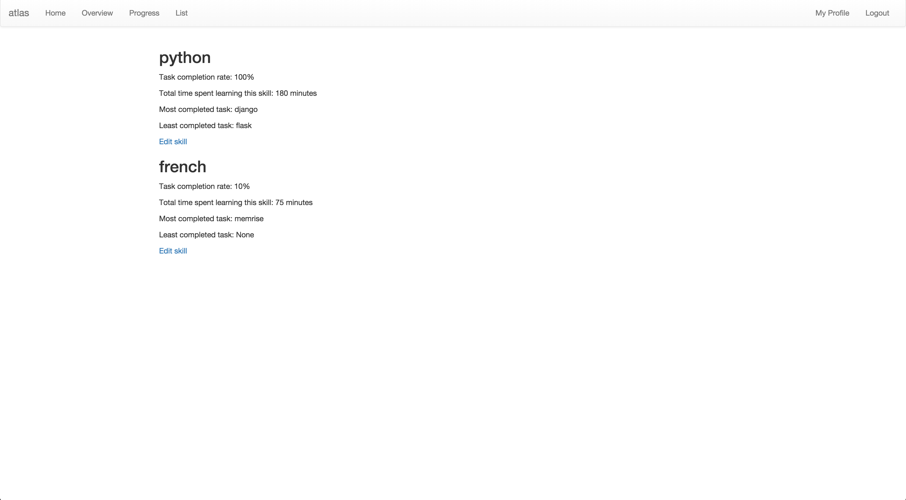

ATLAS
TIME MANAGEMENT WEB APP
See it live >
See the code behind it >
The inspiration for the project grew from being enamoured with the workflow I experienced in the companies I have previously worked for; I loved having a project manager that let me focus on work that felt productive. However, in my spare time I am constantly frustrated with spending time organising how I’m going to spend my time and I wanted to streamline that part of my life. And so, Atlas was born.

After a quick initial set up, Atlas is designed to give the user a daily list of tasks to complete that not only dynamically fits a busy schedule, but efficiently allows a user participate in all of their hobbies. It also keeps track of what has and hasn’t been done, so that the tasks can be tailored accordingly. This results in a more finely tuned optimisation of workflow.
Built with Django, this project gave me the opportunity to really get to grips with the Rest-Framework. While it currently consumes it’s own APIs with the Django templating system, this was a conscious decision that will allow the future implementation of a front-end framework, and eventually a native mobile application.
The current solution proved most appropriate to get a proof of concept working. This allows me to use and test the application to better inform my future decisions when adding and changing features. With more work and fine tuning, I believe it will invaluably support the structure of my, and many others’ spare time.